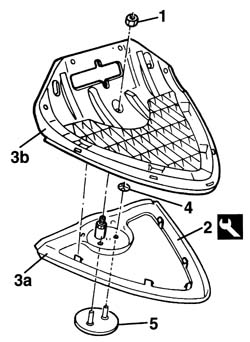
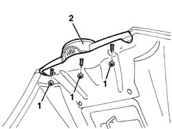

7055A84 front ornament - r r
- Path
- Procedures > 70 FITTINGS > 7055 MOULDING AND PROTECTION > 7055A exterior mouldings > 7055A84 front ornament - r r
- Kind
- repair procedure (removal / refitting; the operation number is the code)
- Applies to
- all engines; all production periods
- Interactive page
- https://sloeber94.github.io/elrnDB-a156/en/#/3238956
Applies to: all engines; production: fino a 03/98, da 04/98 a 02/99, da 03/99 a 01/00, da 02/00 a 01/01, da 02/01 a 02/02, da 03/02 a 09/03
 Removing
Removing
 Refitting
Refitting1. Undo the nut.
2. Release the shield retainers using the special tool.
 | Name | Country |
|---|---|---|
2 | Scraper blade | 1.823.014.000 |
3. Separate the shield (3a) from its mounting (3b).
4. Release the badge inner retainers.
5. Remove the badge, detaching the adhesive that is securing it.

Applies to: all engines; production: fino a 03/98, da 04/98 a 02/99, da 03/99 a 01/00, da 02/00 a 01/01, da 02/01 a 02/02, da 03/02 a 09/03
Refitting
RemovingCheck that the badge is undamaged.
Clean and degrease the surfaces of the badge to be bonded and the housing for the shield.
Apply the adhesive and refit the badge.
Fit the badge inner retainers.
Attach the retainers for the shield to the mounting and tighten the nut.
Applies to: all engines; all production periods
Removing
RefittingOpen the bonnet lid.
1. Unscrew the nuts.
2. Remove the upper shield complete with badge.

Applies to: all engines; all production periods
Refitting
RemovingCheck that the shield and the upper badge are not damaged.
Position the upper badge and secure it using the nuts.